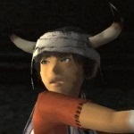
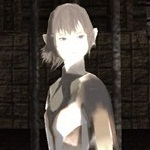
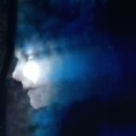

| Developer | Team ICO |
| Designer(s) | Fumito Ueda |
| Kenji Kaido | |
| Composer | Michiru Oshima |
| Platform(s) | Playstation 2 |
| Playstation 3 | |
| Release Date | September 24, 2001 |
| Genre | Action-adventure |
| Rating | ESRB: T |
Ico is different to the other members of his village. Through the inheritance of a set of random genetics - the legacy of generations of his people - Ico has been born with a set of horns jutting from his head. Viewed as a curse by the other villagers, Ico is fated to fulfil an unhappy destiny whereby he is taken from his home at the age of 12 and banished to an eerie fortress to die of hunger and cold.
But Ico has a strong spirit and innate sense of survival. Both inquisitive and industrious, Ico has enough strength for two people - it is this stamina that must ensure his route to freedom.
Yorda is a princess, elfin and waif-like, and bathed in an almost supernatural looking glow. Her fragility immediately captivates Ico who vows to help Yorda escape from her evil mother.
Raised to become a spiritual vessel for her mother who intends to rob Yorda of her youthful body, Yorda is destined to remain imprisoned in the fortress for the rest of her days, watched over by a brood of malign and shadowy spirits.
Unable to communicate with Ico in the same language, Yorda decides never the less to place her trust in him.
And while her meekness and physical weakness may make her totally dependent on Ico at times, she too has powers that will help the two of them in their journey to freedom.
The fortress is ruled by a vicious queen who controls not only the destiny of her daughter, but can overpower any body or soul who enters her kingdom. An unknown quantity, the Queen can magic herself into the form of both a spirit and a human. Her minions take the form of shadowy beasts - squat, bloated figures tasked with shackling Yorda to her hostile prison.